ADMINISTRACJA SYSTEMAMI OPERACYJNYMI / (AD) profile mobilne i udziały sieciowe
Udziały sieciowe i profile mobilne
Stwórz dwa katalogi:Profile do przechowywania danych o profilach mobilnych dzięki którym niewielkie dane użytkowników będą "podróżującymi" np.: pliki tekstowe i tło pulpitu podczas logowania zostaną zaciągnięte z serwera / domeny.
Pliki do przechowywania dużych plików na partycji sieciowej czyli w katalogu będącym na dysku serwera / domeny. 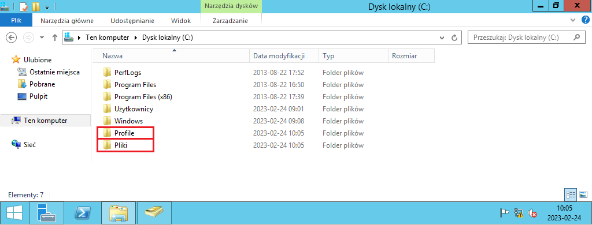 Oba katalogi należy udostępnić.
Zmodyfikuj ich właściwości, przechodząc na zakładkę "Udostępnianie" i klikając w "Udostępnianie zaawansowane...". 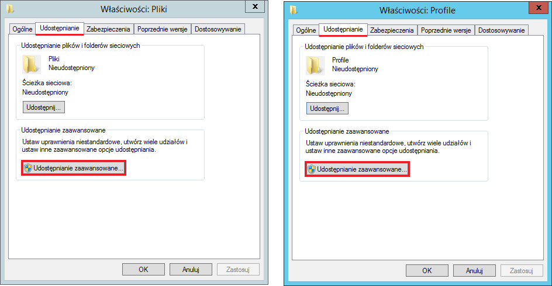 Zaznacz check box "Udostępnij ten folder", a następnie kliknij "Uprawnienia". 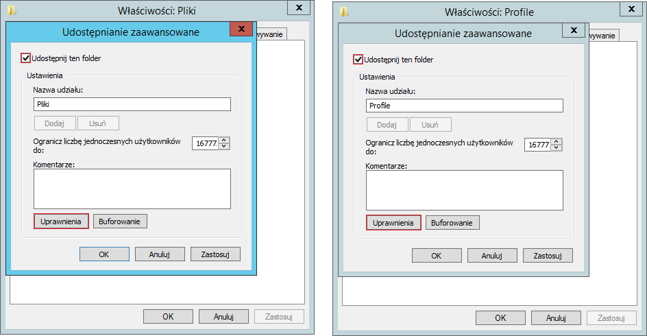 Usuń grupę "Wszyscy" i kliknij "Dodaj...". 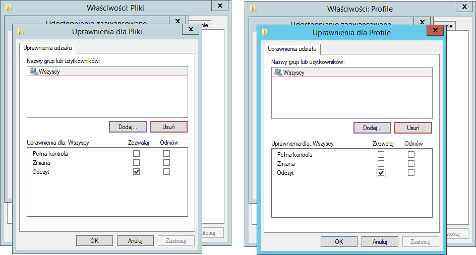 Po wpisaniu frazy Adam kliknij "Sprawdź nazwy". 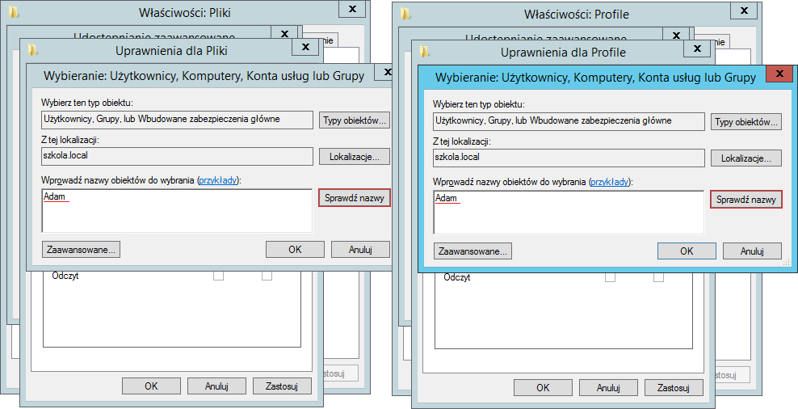 Po sprawdzeniu dopisz spację i frazę Ewa. Znowu sprawdź nazwę i po spacji dopisz Admin. 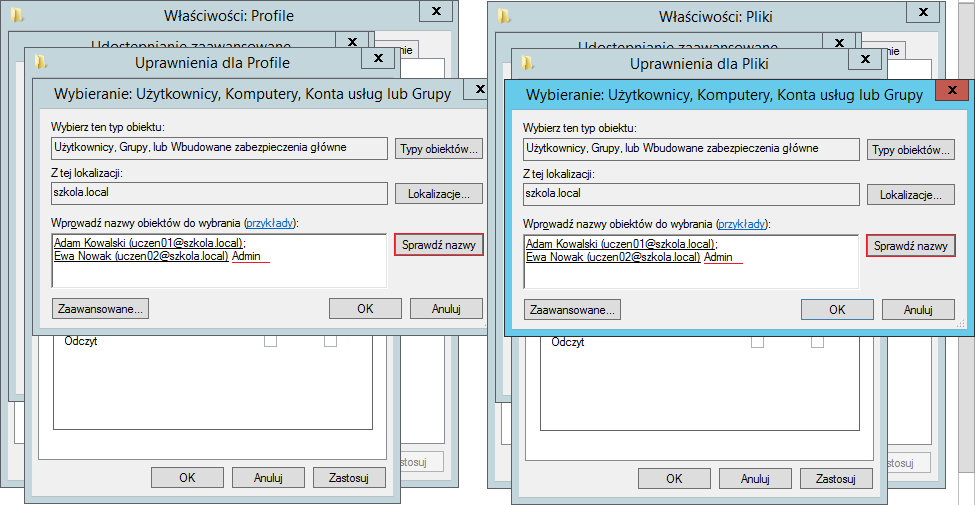 Przy sprawdzaniu nazwy Admin pojawi się okno znalezionych użytkowników i grup.
Wybierz użytkownika "Administrator" i kliknij OK. 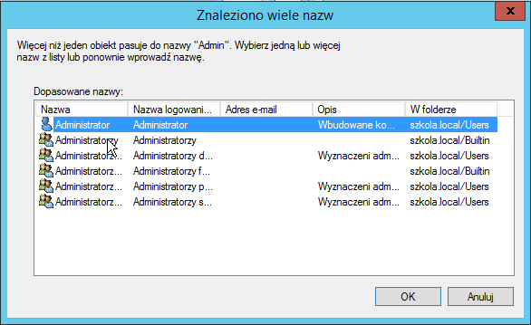 Ustaw prawa do katalogów:
Dla Adama i Ewy zezwól na Zmiana i Odczyt, natomiast dla Administratora przyznaj dodatkowo Pełną kontrolę. 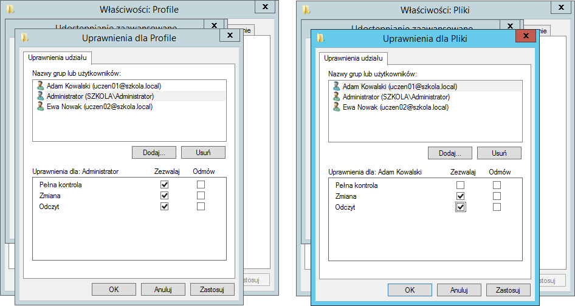 Jeżeli wszystko wykonano poprawnie pojawi się ścieżka sieciowa do katalogu.
WIN-VCFR6J2T26V to nazwa komputera będącego serwerem. 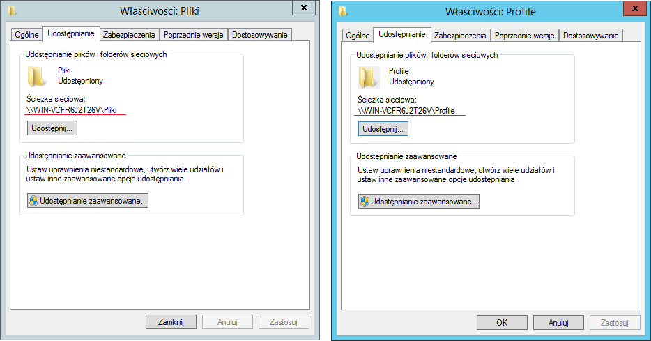 Wróćmy do właściwości użytkowników. W zakładce Profil
dodaj po \\ adres ip serwera
\ nazwę katalogu ( Profile dla profilu oraz Pliki dla folderu macierzy )
\ %username% - jest to zmienna która przechowuje login użytkownika którego właściwości teraz zmieniamy
Zmień literę partycji sieciowej na pierwszą literę nazwiska. 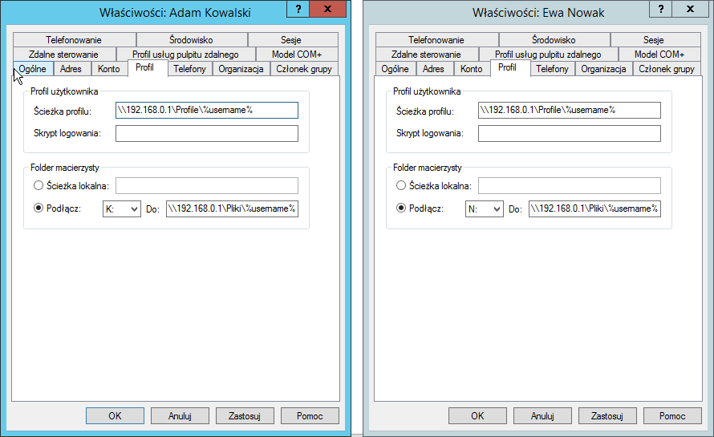 Dodałem kolejną maszynę z Windows 10 do domeny.
Teraz logujemy się na konta uczniów. 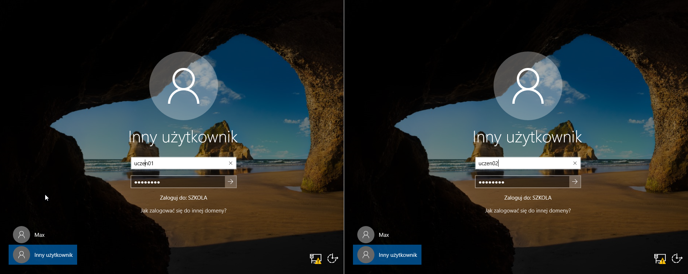 Jak widać poniżej oba konta mają swoje partycje sieciowe z literkami K od Kowalski i N od Nowak 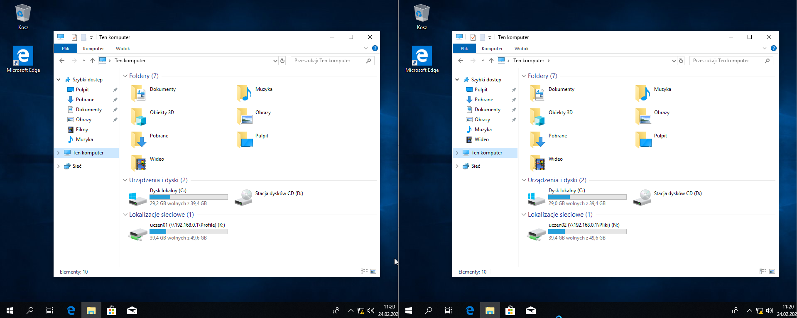 Ustawmy Adamowi inne tło pulpitu, a Na pulpicie Ewy utwórzmy nowy plik test.txt 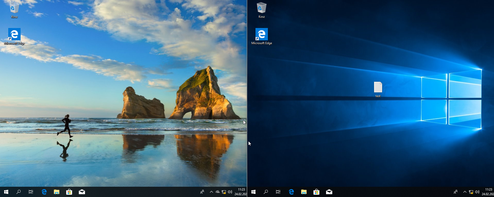 Po przelogowaniu informacje o tapecie i pliku powędrowały wraz z użytkownikiem.